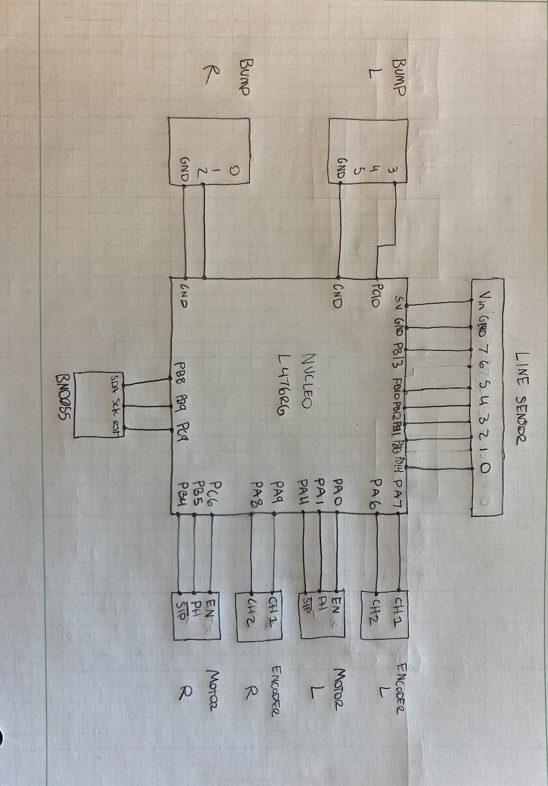

Loading...
Searching...
No Matches
Romi
github: https://github.com/schamb/me405_romi/tree/main
Background
This project uses microPython run on a STM32 Nucleo-L476RG to autonoumounsly navigate a line following challenge course. The course consists of several diferent types of lines and an obstacale. Once the Romi robot completes the course it must return to its origional starting position. To achieve this we used motor-encoder control, a line sensor, a bump sensor and an IMU. You can see one of our completed runs here. Please navigate this page to learn more about the hardware we used, the logic of our code, and some ways to improve upon this project further.
Nucleo Board

Classes
Related Pages
Generated by